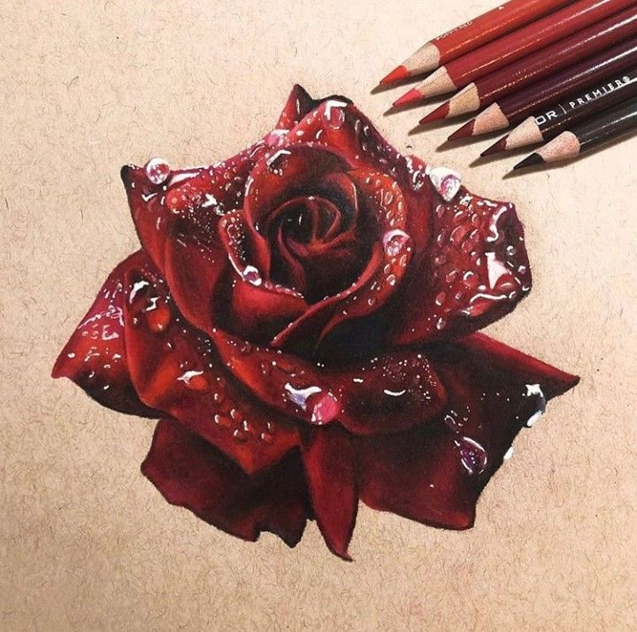
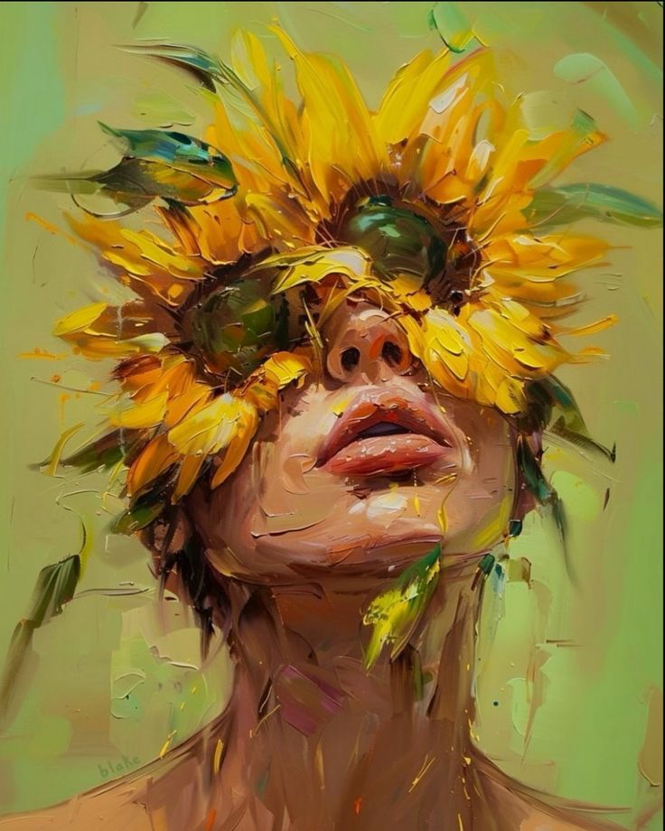

This artwork shows a powerful portrait made with bold and messy brushstrokes. The figure looks strong and calm, as if she’s been painted with emotion instead of just colors. Her face is mostly in shadow, but soft highlights on her skin bring her to life.

This painting shows a graceful woman dressed in elegant, traditional clothing. She wears a patterned head wrap, a necklace, and long earrings that sparkle with detail.
This is a beautiful drawing of a deep red rose, made with colored pencils. At first glance, it almost looks like a photograph because of how realistic it is. The petals are rich in color, with highlights and shadows that give the flower depth and softness.
This painting features a close-up of a human eye surrounded by vibrant, textured brushstrokes. The eye is blue and highly detailed, with reflections and shadows that give it a realistic appearance.
This painting is a modern, abstract portrait of a face. The artist uses geometric shapes and blocks of color to create the image.
The artist's intention in this painting seems to be to create a surreal and imaginative composition by blending human features with natural elements.
This image shows a painting of a forest scene with tall evergreen trees, likely pine or fir, shrouded in mist.
The dynamic splash of the wine adds a sense of movement and energy to the piece, while the realistic style showcases the artist's skill and attention to detail.